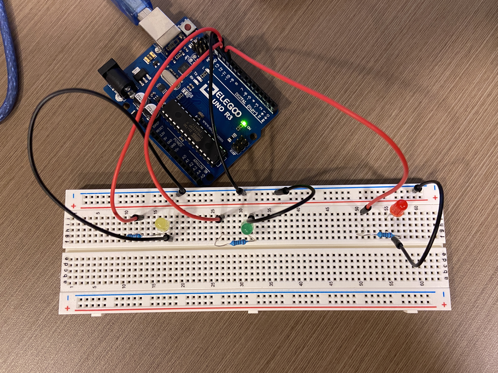

Schematic: Three LEDs, red, yellow, and green, were used and each was connected to a resistor to make sure that the current is less than 20 mA. Red LED: pin 11 Green LED: pin 12 Yellow LED: pin 13
Circuit: I used Ohm’s law to calculate the resistance of the resistor I should use: V=I*R Since the voltage drop for red,yellow,and greed LEDs are 1.8 V, 5V-1.8V=20mA*R Since 1A=1000mA, R=3.2V/0.02A R=160Ω However, there is no 160 Ω resistor in the kit, so I chose to use the 220 Ω ones because the way to make the current to be less than 20 mA is to choose a resistor with a slightly greater resistance.
// The setup:
// red LED -> pin 11
// green LED -> pin 12
// yellow LED -> pin 13
// create loop variable currentPin for initializing the pins
int currentPin;
// create loop variable i for turning yellow LED on and off
int i;
// Initialize pins 11, 12, and 13
void setup() {
// loop through each pin
for (currentPin = 11; currentPin < 14; currentPin++) {
pinMode(currentPin, OUTPUT); // initialize the pin as output
}
}
// Allow the LEDs to blink in a pattern
void loop() {
digitalWrite(11, HIGH); // Turn on red LED
delay (500); // Wait for 0.5 second
digitalWrite(12, HIGH); // Turn on green LED
delay (500); // Wait for 0.5 second
// for loop: Turn yellow LED on and off 5 times
for (i = 0; i < 5; i++) {
digitalWrite(13, HIGH); // Turn on yellow LED
delay (100); // Wait for 0.1 second
digitalWrite(13, LOW); // Turn off yellow LED
delay (100); // Wait for 0.1 second
}
digitalWrite(11, LOW); // Turn off the red LED
delay (500); // Wait for 0.5 second
digitalWrite(12, LOW); // Turn off the green LED
delay (500); // Wait for 0.5 second
}

For each cycle, the red LED turns on first and waits for 0.5 second. Then the green LED turns on and waits for 0.5 second. While both the red and green LEDs are on, the yellow LED repeats the following steps for 5 times: it turns on, waits for 0.1 second, turns off, and waits for 0.1 second. After that, the red LED turns off and wait for 0.5 second. Then the greed LED turns off and wait for 0.5 second.